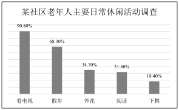

第 1 题 #
1.A. illusionB. discussionC. traditionD. question
点击查看答案
此题暂无可用答案。
考研英语 · questions · 2025
题号和章节目录由结构化数据生成。选项统一显示 A.、B.、C.、D.；原标记保留在 JSON 中。
Read the following text. Choose the best word(s) for each numbered blank and mark A, B, C or D on the ANSWER SHEET. (10 points)
There are many understandable reasons why you might find it difficult to ask for help when you need it. Psychologists have been interested in this 1 for decades, not least because people’s widespread 2 to ask for help has led to some high-profile failures.
Asking for help takes 3 . It involves communicating a need on your part — there’s something you can’t do. 4 , you’re broadcasting your own weakness, which can be 5 . You might have 6 about losing control of whatever it is you are asking for help with. 7 someone starts to help, perhaps they will take over, or get a credit for your early efforts. Yet another 8 that you might be worried about is being a nuisance or 9 the person you go to for help.
If you struggle with low self-esteem, you might find it especially difficult to 10 for help because you have the added worry of the other person 11 your request. You might see such refusals as implying something 12 about the status of your relationship with them. To 13 these difficulties, try to remind yourself that everyone needs help sometimes. Nobody knows everything and can do everything all by themselves. And while you might 14 coming across as incompetent, there’s actually research that shows that advice-seekers are 15 as more competent, not less.
Perhaps most encouraging of all is a paper from 2022 by researchers at Stanford University, in California, that involved a mix of contrived help-seeking interactions and asking people to 16 times they’d sought help in the past. The findings showed that help-seekers generally underestimate how 17 other people will be to help and how good it will make the help-giver feel (for most people, having the chance to help someone is highly 18 ).
So bear all this in mind the next time you need to ask for help. 19 , take care over who you ask and when you ask them. And if someone can’t help right now, avoid taking it personally. They might just be too 20 , or they might not feel confident about their ability to help.
此题暂无可用答案。
此题暂无可用答案。
此题暂无可用答案。
此题暂无可用答案。
此题暂无可用答案。
此题暂无可用答案。
此题暂无可用答案。
此题暂无可用答案。
此题暂无可用答案。
此题暂无可用答案。
此题暂无可用答案。
此题暂无可用答案。
此题暂无可用答案。
此题暂无可用答案。
此题暂无可用答案。
此题暂无可用答案。
此题暂无可用答案。
此题暂无可用答案。
此题暂无可用答案。
此题暂无可用答案。
Read the following four texts. Answer the questions after each text by choosing A, B, C or D. Mark your answers on the ANSWER SHEET. (40 points)
U.S. customers historically tipped people they assumed were earning most of their income via tips, such as restaurant servers earning less than the minimum wage. In the early 2010s, a wide range of businesses started processing purchases with iPads and other digital payment systems. These systems often prompted customers to tip for services that were not previously tipped.
Today’s tip requests are often not connected to the salary and service norms that used to determine when and how people tip. Customers in the past nearly always paid tips after receiving a service, such as at the conclusion of a restaurant meal, after getting a haircut or once a pizza was delivered. That timing could reward high-quality service and give workers an incentive to provide it.
It’s becoming more common for tips to be requested beforehand. And new tipping technology may even automatically add tips.
The prevalence of digital payment devices has made it easier to ask customers for a tip. That helps explain why tip requests are creeping into new kinds of services. Customers now routinely see menus of suggested default options — often well above 20% of what they owe. The amounts have risen from 10% or less in the 1950s to 15% around the year 2000 to 20% or higher today. This increase is sometimes called tipflation — the expectation of ever-higher tip amounts.
Tipping has always been a vital source of income for workers in historically tipped services, like restaurants, where the tipped minimum wage can be as low as US $2.13 an hour. Tip creep and tipflation are now further supplementing the income of many low-wage service workers.
Notably, tipping primarily benefits some of these workers, such as waiters, but not others, such as cooks and dishwashers. To ensure that all employees were paid fair wages, some restaurants banned tipping and increased prices, but this movement towards no-tipping services has largely fizzled out.
So to increase employee wages without raising prices, more employers are succumbing to temptations of tip creep and tipflation. However, many customers are frustrated because they feel they are being asked for too high of a tip too often. And, as our research emphasizes, tipping now seems to be more coercive, less generous, and often completely dissociated from service quality.
21. According to Paragraph 1, the practice of tipping in the U.S. ____
此题暂无可用答案。
22. Compared with tips in the past, today’s tips ____
此题暂无可用答案。
23. Tip requests are creeping into new kinds of services as a result of ____
此题暂无可用答案。
24. The movement toward no-tipping services was intended to ____
此题暂无可用答案。
25. It can be learned from the last paragraph that tipping ____
此题暂无可用答案。
When it was established, the National Health Service (NHS) was visionary: offering high-quality, timely care to meet the dominant needs of the population it served. Nearly 75 years on, with the UK facing very different health challenges, it is clear that the model is out of date.
From life expectancy to cancer and infant mortality rates, we are lagging behind many of our peers. With more than 6.8 million on waitlists, healthcare is becoming increasingly inaccessible for those who cannot opt to pay for private treatment; and the cost of providing healthcare is increasingly squeezing our investment in other public services. As demand for healthcare continues to grow, pressures on the workforce — which is already near breaking point — will only become more acute.
Many of the answers to the crisis in health and care are well rehearsed. We need to be much better at reducing and diverting demand on health services, rather than simply managing it. Much more needs to be invested in communities and primary care to reduce our reliance on hospitals. And capacity in social care needs to be greater, to support the growing number of people living with long-term conditions.
Yet despite two decades of strategies and a number of major health reforms, we have failed to make meaningful progress on any of these aims. That is why the Reform think tank is launching a new programme of work entitled “Reimagining health”, supported by ten former health ministers. Together, we are calling for a much more open and honest conversation about the future of health in the UK, and an “urgent rethink” of the hospital-centric model we retain.
This must begin with the question of how we maximise the health of the nation, rather than “fix” the NHS. It is estimated, for example, that healthcare accounts for only about 20% of health outcomes. Much more important are the places we live, work and socialise — yet there is no clear cross-government strategy for improving these social determinants of health. Worse, when policies like the national obesity strategy are scrapped, taxpayers are left with the hefty price tag of treating the illnesses, like diabetes, that result.
Reform wants to ask how power and resources should be distributed in our health system. What health functions should remain at the centre, and what should be given to local leaders, often responsible for services that create health, and with a much better understanding of the needs of their populations?
26. According to the first two paragraphs, the NHS ____
此题暂无可用答案。
27. One answer to the crisis in health and care is to ____
此题暂无可用答案。
28. “Reimagining health” is aimed to ____
此题暂无可用答案。
29. To maximise the nation’s health, the author suggests ____
此题暂无可用答案。
30. It can be inferred that local leaders should ____
此题暂无可用答案。
Heat action plans, or HAPs, have been proliferating in India in the past few years. In general, an HAP spells out when and how officials should issue heat warnings and alert hospitals and other institutions. Nagpur’s plan, for instance, calls for hospitals to set aside “cold wards” in the summer for treating heatstroke patients, and advises builders to give construction laborers a break from work on very hot days.
But implementation of existing HAPs has been uneven, according to a report from the center for Policy Research. Many lack adequate funding, it found. And their triggering thresholds often are not customized to the local climate. In some areas, high daytime temperatures alone might serve as an adequate trigger for alerts. But in other places, nighttime temperatures or humidity might be as important a gauge of risk as daytime highs.
Mumbai’s April heat stroke deaths highlighted the need for more nuanced and localized warnings, researchers say. That day’s high temperature of roughly 36°C was 1°C shy of the heat wave alert threshold for coastal cities set by national meteorological authorities. But the effects of the heat were amplified by humidity — an often neglected factor in heat alert systems — and the lack of shade at the late-morning outdoor ceremony.
To help improve HAPs, urban planner Kotharkar’s team is working on a model plan that outlines best practices and could be adapted to local conditions. Among other things, she says, all cities should create a vulnerability map to help focus responses on the populations most at risk.
Such mapping doesn’t need to be complex, Kotharkar says. “A useful map can be created by looking at even a few key parameters.” For example, neighborhoods with a large elderly population or informal dwellings that cope poorly with heat could get special warnings or be bolstered with cooling centers. The Nagpur project has already created a risk and vulnerability map, which enabled Kotharkar to tell officials which neighborhoods to focus on in the event of a heat wave this summer.
HAPs shouldn’t just include short-term emergency responses, researchers say, but also recommend medium- to long-term measures that could make communities cooler. In Nagpur, for example, Kotharkar’s team has been able to advise city officials about where to plant trees to provide shade. HAPs could also guide efforts to retrofit homes or modify building regulations. “Reducing deaths in an emergency is a good target to have, but it’s the lowest target,” says Climate researcher Chandni Singh.
31. According to Paragraph 1, Nagpur’s plan proposes measures to ____
此题暂无可用答案。
32. One problem with existing HAPs is that they ____
此题暂无可用答案。
33. Mumbai’s case shows that India’s heat alert systems need to ____
此题暂无可用答案。
34. Kotharkar holds that a vulnerability map can help ____
此题暂无可用答案。
35. According to the last paragraph, researchers believe that HAPs should ____
此题暂无可用答案。
Navigating beyond the organised pavements and parks of our urban spaces, desire paths are the unofficial footprints of a community, revealing the unspoken preferences, shared shortcuts and collective choices of humans. Often appearing as trodden dirt tracks through otherwise neat green spaces, these routes of collective disobedience cut corners, bisect lawns and cross hills, representing the natural capability of people (and animals) to go from point A to point B most effectively.
Urban planners interpret desire paths as more than just convenient shortcuts; they offer valuable insights into the dynamics between planning and behaviour. Ohio State University allowed its students to navigate the Oval, a lawn in the centre of campus, freely, then proceeded to pave the desire paths, creating a web of effective routes students had established.
Yet, reluctance persists among other planners to integrate desire paths into formal plans, citing concerns about safety, environmental impact, or primarily, aesthetics. A Reddit webpage devoted to the phenomenon, boasting nearly 50,000 members, showcases images of local desire paths adorned with signs instructing pedestrians to adhere to designated walkways, underscoring the rebellious nature inherent in these human-made tracks. This clash highlights an ongoing struggle between the organic, user-driven evolution of public spaces and the desire for a visually curated and controlled urban environment.
The Wickquasgeck Trail is an example of a historical desire path, created by Native Americans to cross the forests of Manhattan and move between settlements quickly. This trail, when Dutch colonists arrived, was widened and made into one of the main trade roads across the island, known at the time as de Heere Straat, or Gentlemen’s Street. Following the British assumption of control in New York, the street was renamed Broadway. Notably, Broadway stands out as one of the few areas in NYC that defies the grid-based system applied to the rest of the city, cutting a diagonal across parts of the city.
In online spaces, desire paths have sparked a fascination that can approach obsession, with the Reddit page serving as a hub. Contributors offer a wide array of stories, from little-known new shortcuts to long-established alternate routes.
Animal desire paths, such as ducks forging trails through frozen ponds or dogs carving direct routes in gardens, highlight the adaptability of these trails in both human and animal experiences. As desire paths criss-cross through both physical and virtual landscapes, they stand as a proof of the collective insistence on forging unconventional routes and embracing the spirit of communal choice.
36. According to Paragraph 1, desire paths are a result of ____
此题暂无可用答案。
37. It can be inferred that Ohio State University ____
此题暂无可用答案。
38. The images on the Reddit webpage reflect ____
此题暂无可用答案。
39. The example of the Wickguasgeck Trail illustrates ____
此题暂无可用答案。
40. It can be learned from the last paragraph that desire paths ____
此题暂无可用答案。
Read the following text and answer the questions by choosing the most suitable subheading from the list A-G for each of the numbered paragraphs (41-45). There are two extra subheadings which you do not need to use. Mark your answers on the ANSWER SHEET. (10 points)
Five Steps to Suggesting a Change at Work That’ll Actually Get Taken Seriously
Everyone wants to be that person — the one who looks at the same information as everyone else, but who sees a fresh, innovative solution. However, it takes more than simply having a good idea. How you share it is as important as the suggestion itself.
Why? Because writing a new script — literally or figuratively — means that other team members will have to adapt to something new. So whether you’re suggesting a (seemingly) benign change like streamlining outdated protocol, or a bigger change like adding an hour to each workday so people can leave early on Fridays, you’re asking others to reimagine their workflow or schedule. Not to mention, if the process you’re scrapping is one someone else suggested, there’s the possibility of hurt feelings.
To gain buy-in on an innovative, new idea, follow these steps:
41. _________________________
Great ideas don’t stand alone. In other words, you can’t mention your suggestion once and expect it to be adopted. To see a change, you’ll need to champion your plan and sell its merits. In addition, you need to be willing to stand up to scrutiny and criticism and be prepared to explain your innovation in different ways for various audiences.
此题暂无可用答案。
42. _________________________
Sometimes it makes sense to go to your boss first. But other times, it’s useful to build a coalition among your co-workers or other stakeholders. When it works, it works great — because you’re ready for your stubborn supervisor’s pushback with answers like, “Actually, I connected with a few people in our tech department to discuss how much time these kinds of website updates would take, and they suggested they have the bandwidth.”
此题暂无可用答案。
43. _________________________
One of the biggest barriers to gaining buy-in occurs when the owner of an idea is viewed as argumentative, defensive, or close-minded. Because, let’s be honest: No one likes a know-it-all. So, if people disagree with you, don’t be indignant. Instead, listen to their concerns fully, try to understand their perspective, and include their concerns (and possible remedies) in future discussions.
So, instead of saying, “Martha, our current slogan is confusing and should be updated,” you could try, “Martha raises a great point that our current slogan has a long history for our stakeholders, but I wonder if we might be able to brainstorm a tagline that could build on that — and be clearer for new customers.”
此题暂无可用答案。
44. _________________________
New ideas are the grandchildren of old ones. In other words, don’t throw old solutions under the bus to make your improvement stand out. Remember that in light of whatever the problem the old system solved — or, maybe, has failed to solve in recent memory — it was a great idea at the time. Appreciating the older contributions as you suggest future innovations helps bolster the credibility of your idea.
此题暂无可用答案。
45. _________________________
When pitching a new idea, it’s important to use the language of abundance instead of the language of deficit. Instead of saying what is wrong, broken, or suboptimal, talk about what is right, fixable, or ideal. For example, try, “I can see lots of applications for this new approach” rather than, “This innovation is the only way.” Be optimistic but realistic, and you will stand out.
此题暂无可用答案。
46. Directions:
Translate the following text into Chinese. Write your translation on the ANSWER SHEET. (15 points)
You know the moment — the conversation slows, then there’s a pause. It’s awkward, and so awkward that some people will panic and say anything. Do we all find such silences so stressful?
Researchers analysed the frequency and impact of gaps greater than 2 seconds during conversations, including an overview of previous studies which indicate that the fear of awkward silences can be so extreme that people avoid talking to strangers, even though doing so is likely to be an enjoyable experience.
During conversations with short gaps, people feel more connected to their conversation partners. But such feelings of connection markedly dip when entering a long gap. Long gaps between strangers are likely to be followed by a change in topic.
But the opposite seems to be true for conversations between friends. Long gaps there saw increased connection. Between friends, longer gaps seem to provide natural moments for reflection and expression.
此题暂无可用答案。
47. Directions:
Suppose you are planning a short play based on a classic Chinese novel. Write your friend John an email to:
1) introduce the play, and
2) invite him to take part in it.
Write your answer in about 100 words on the ANSWER SHEET. Do not use your own name in your email. Use “Li Ming” instead. (10 points)
此题暂无可用答案。
48. Directions:
Write an essay based on the chart below. In your essay, you should
1) describe and interpret the chart, and
2) give your comments.
Write your answer in about 150 words on the ANSWER SHEET. (15 points)

此题暂无可用答案。